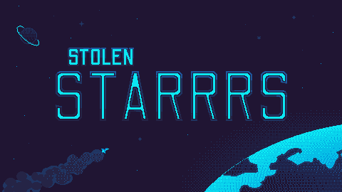

Dev Blog
<- Back
- Mar 16, 2022
Scenes in space...
So much came together this week! I created our options menu scene, which was surprisingly more difficult than I thought. Choosing what options you want for your game also means implementing those options in the code, so I had to make sure to keep everything in the scope of what we can manage at this time. I also put together our credits scene, which I may add more to as we move closer to the conclusion and upload of our game to the public. As far as Jira goes, the last thing I completed this week was with Ahmet, repurposing the menu system, allowing us to use the main menu and options menu scenes to be used functionally.
Our sound designer completed a few tracks and collections of sound FX, which Josh implemented into the different scenes. Seeing the game work with sound behind it really helps pull yourself into the actual game, it's exciting to see. In order to favor a more linear level system, we've decided to drop procedural generation. We needed to narrow our scope a bit more in order to be able to see a mostly finished product by the end of April. Serhii was able to add a system for different guns, which will allow the character to have different abilities or weapon pickups. Ahmet created a portal system, which will transport the player from scene to scene, and I created assets for players to see that visually.
Coming up is our last sprint to the finish line. We are aiming to create a small video to include in the Level Up Showcase, which will also require a finished webpage and uploading the game to itch.io. We are also going to be uploading the game to Google Play, and hope for a future Steam release. By the end of next week, we should be reaching an alpha stage of our build. This will include a boss fight, and basic stat progression for the players to have something to build on. Everything is really wrapping up, and I feel genuinely excited to see where things can go from here.
- Mar 3, 2022
Assets incomming...
This week lots of assets have been created and imported for our project. To start the week off. I've added the new pause background to the in game scene. Previously, it was just the main menu background but with added transparency.
After the pause background, I began creating the assets for the upcoming areas. Next was sprites, multiple sprites have been added to the tileset and imported to the project. This includes a couple emotes, a pedestal for items, targets for the gun range, tables and chairs, and more weapons!
Some animations were also created and imported. The shop animation that was featured in last weeks blog has been added to the project. I've split the animated logo apart, and imported the text and star animations to unity. Finally, I've also started developing the idle and walking animations for the characters / enemies of the game.
In terms of challenges that I've experienced this week, I think the hardest was the tilemap update. I'm somewhat familiar with how unity's tilemaps work, however I have yet to update a tilemap that had been already created. The only way I could conceive this update was to create a new tilemap, this would also scrap all the previous map work we had completed. Obviously, there had to be a better way without individually adding each tile, or scrapping the previous map. Finally after a bit of research, I found a method. That was a major weight lifted off me, because I could now modify and add to the tilemap as much as I need to in the future.
I'm really excited for these next weeks. As animations are finished and the game becomes more refined in terms of menus, UI, and maps, it'll be interesting to show a relatively complete project soon.
- Feb 24, 2022
Finally a prototype...
Our team was very proud to present our prototype this week. It may be buggy and featureless at this point, but it's a milestone. The working prototype contains: player and enemy shooting, multiple enemy types, collisions, and more to come! The next version of our game is aiming to incorperate a list of new features: The Pirate Hub, shops, unique rooms, multiple items, and UI.
This sprint I have been given quite a few tasks, some of which I've already started working on. As you can see above, I'm working on assets for the store and players. This includes walking and idle animations for characters, npcs, weapons, and items. Furthermore I will need to create the options and credits scenes for the game. We've decided that the credits scene will feature a small minigame where you can shoot the entries as they scroll. We hope it can be a nice reward for the players who brave their way to the end of our game.
- Feb 17, 2022
Trials and tribulations...
Pretty major update, our team has almost finished the prototype. This week we needed to bring the basics of our project together. My main role this week was to create all of the assets and menus scenes. The art features a 16x16 tileset with game, UI, and character elements. Menu backgrounds and title animations were also added to the game to spice it up a bit. Honestly I had a pretty easy time, which gave me the extra time to help my teammates.
Regarding the progression of this week, we have been through quite a few issues. Github being the largest monster of them all. Pulling branches can be incredibly complicated as we learned. One of the branches that had been merged had many conflicts, and completely broke our project. Luckly we came together, sorted out the issues, and now have a working demo! Hopefully next week will have less hiccups.
- Feb 9, 2022
Document everything...
While there was a lot of progress with ideas this week, there wasn't a whole lot of actual development done. Mainly focusing on our TDDs (Technical Design Documents), we all individually worked on our allotted game elements in the document, and came together to help complete certain sections. We had a lot of group discussions to flesh out the written work behind our game, and help with grammar for our non-English speaking members. TDDs have been a bit of a challenge for us, with most of us excelling in the actual development or art aspect of creating a game. Working on our TDDs, however, really helped us flesh out the ideas behind the entire game, and allow us to see what we might be missing or not thinking of. We hadn't even considered the Loading or Save screens yet, so that's something I'm going to work on designing over the next week. Other ideas we fleshed out were the actual game menus and UI, which I added into our documentation.
As far as design goes, I was able to complete our game's Logo, with a few small changes to be made here and there. I made some adjustments to the tileset, which is bordering completion for the area I'm working on at this point in time. I may expand on it and make other themes for the tileset in the coming weeks as well. This next week I'm excited to get started in the actual deep development of Stolen Starrrs, so I can dive into the world of asset creation.
- Feb 3, 2022
Phase Complete...
Week 3 of development has begun for our game Starrrs. This week, we were introduced to the mentors that will be helping guide us through the process of developing our first full-release game. Our mentors are from Snowed In Studios, a development company in Ottawa. They've supported many of the games I've played, such as Dead by Daylight, The Sims 3, and Middle Earth Shadow of Mordor, and have also worked in development on Deus Ex Human Revolution, which I enjoyed personally. I'm very excited to be able to get the perspective of those with available work while we conceptualize and deliver Starrrs.
I worked a lot on the concept art this week. I learned a lot about pixel scaling, as some programs don't actually present them properly for concept art. I created some gameplay examples, showing what the game would look like during play. I am still working on what the gaming hub would look like, but I've almost completed the Title Screen. The Title Screen really shows off the logo, so I'm hoping to finish that for next week. There's a lot of general space pixel art to really grab inspiration from, and it's assisted in shaping my direction. Sav, the person Joshua was able to talk to about our music, was able to create some awesome menu music that we will be using. Art wise, everything is really starting to take a solid shape and direction.  The team was able to come together with our teacher James Dupuis and discuss our Technical Design Document (TDD). On Jira, we put in tasks to work on to get the TDD put together, and we discussed who would work on finishing which tasks. I have been tasked with finishing the UI and art so far, but may help with other things along the way. As our team approaches the end of the planning phase, it is very exciting to finally get into the meat and potatoes of this game.
The team was able to come together with our teacher James Dupuis and discuss our Technical Design Document (TDD). On Jira, we put in tasks to work on to get the TDD put together, and we discussed who would work on finishing which tasks. I have been tasked with finishing the UI and art so far, but may help with other things along the way. As our team approaches the end of the planning phase, it is very exciting to finally get into the meat and potatoes of this game.
- Jan 26, 2022
Space and Pirates...

This week was the real beginnings of work on StARRRs. As a team (Serhii, Devon, Joshua, Ahmet, and Myself), we've come together to really start to visualize our project. We've decided, after a lot of back and forth, to create an action-adventure, rogue-like, dungeon crawler RPG with a fantasy-space theme. After I set up the Jira and Confluence for our team, I began working on the art for our GDD, inspired by The Binding of Isaac and pixel artists. Using Aseprite and Tiled, I have been creating a tileset to help us visualize our ideas. During this week, we also decided on the game's name, StARRRs, which refers to the space theme and main character's pirate lore. A lot of the games mechanics were decided, mostly inspired by games like Undermine, Diablo II, and The Binding of Isaac. Joshua was able to find someone to assist us with the game's soundtrack, and we've been discussing different colour palettes for certain areas of the game. The story of the game was also figured out, showing our main character arriving on an abandoned space ship. After an accident, he is saved by pirates and indebted to them, forced to go on pillaging runs.
 There's plenty of work to be done still on the characters themselves. I've really enjoyed my time so far working with the art in the game, and I'm excited to create more, and for the future of StARRRs. Hopefully, in the coming week, we are able to solidify even more game mechanics, and a name for our development group. The base of the game is pretty solidified, so building it is up next.
There's plenty of work to be done still on the characters themselves. I've really enjoyed my time so far working with the art in the game, and I'm excited to create more, and for the future of StARRRs. Hopefully, in the coming week, we are able to solidify even more game mechanics, and a name for our development group. The base of the game is pretty solidified, so building it is up next.
- Dec 14, 2021
What I've been working on…
Currently playing…